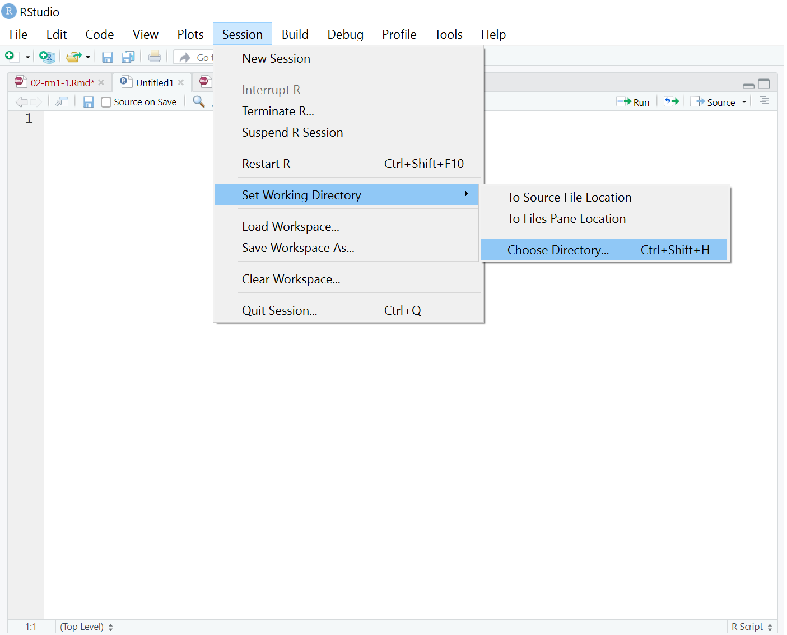

2 Creating Reproducible Documents
In this chapter, we introduce you to using code to create reproducible research. Creating reproducible research means you will write text and code that completely and transparently performs an analysis from start to finish in a way that produces the same result for different people using the same software on different computers. We will cover things such as file structure and setting a working directory, using R Markdown files, and writing code chunks.
As well as improving transparency with others researchers, reproducible research benefits you. When you return to an analysis or task after days, weeks, or months, you will thank past you for doing things in a transparent, reproducible way, as you can easily pick up right where you left off.
As part of your skill development, it is important that you work with data so that you can become confident and competent in your management and analysis of data. Starting in this chapter, we introduce you to creating reproducible documents alongside developing your data skills.
Chapter Intended Learning Outcomes (ILOs)
By the end of this chapter, you will be able to:
- ILO1.
2.1 File structure, working directories, and R Projects
In chapter 1, we never worked with files, so you never had to worry about where you put things on your computer. Before we can start working with R Markdown files, we must explain what a working directory is and how your computer knows where to find things. Your working directory is the folder where your computer starts to look for files. It would be able to access files from within that folder and within sub-folders in your working directory, but it would not be able to access folders outside your working directory.
In this course, we are going to prescribe a way of working to support an organised file system, helping you to know where everything is and where R will try to save things on your computer and where it will try to save and load things. Once you become more comfortable working with files, you can work in a different way that makes sense to you, but we recommend following our instructions for at least the first course - RM1.
2.1.1 Activity 1: Create a folder for all your work
In your documents or OneDrive, create a new folder called ResearchMethods1_2. This will be your highest level folder where you will save everything for Research Methods 1 and 2.
Top tip
When you are a student at the University of Glasgow, you have access to the full Microsoft suite of software. One of those is the cloud-based storage system OneDrive. We heavily recommend using this to save all your work in as it backs up your work online and you can access it from multiple devices.
Within that folder, create two new folders called Assessments and Quant_Fundamentals. In Assessments, you can save all your assessments for RM1 and RM2 as you come to them. In Quant_Fundamentals, that is where you will save all your work as you progress through this book.
Within Quant_Fundamentals, create a new folder called Chapter_02_reproducible_docs. As you work through the book, you will create a new chapter folder each time you start a new chapter and the sub-folders will always be the same. Within Chapter_02_reproducible_docs, create two new folders called data and figures. As a diagram, it should look like Figure 2.1.
Top tip
You might notice in the folder names we avoided using spaces by adding things like underscores _ or capitalising different words. Historically, spaces in folder/file names could cause problems for code, but now its just slightly easier when file names and folder names do not have spaces in them.
For naming files and folders, try and choose something sensible so you know what it refers to. You are trying to balance being as short as possible, while still being immediately identifiable. For example, instead of fundamentals of quantitative analysis, we called it Quant_Fundamentals.
Warning
When you create and name folders to use with R / RStudio, Whatever you do, do not call the folder “R”. If you do this, sometimes R has an identity crisis and will not save or load your files properly. It can also really damage your setup of R and lead you to having to reinstall everything. The reason calling your folder “R” can be a problem is R tends to save all the packages in a folder called R. If there is another folder called R, then it gets confused and stops working properly.
File management when using the online server
If we support you to use the online University of Glasgow R Server, working with files is a little different. If you downloaded R / R Studio to your own computer or you are using one of the computers, please ignore this section.
The main disadvantage to using the R server is that you will need create folders on the server and then upload and download any files you are working on to and from the server. Please be aware that there is no link between your computer and the R server. If you change files on the server, they will not appear on your computer until you download them from the server, and you need to be very careful when you submit your assessment files that you are submitting the right file. This is the main reason we recommend installing R / RStudio on your computer wherever possible.
Going forward throughout this book, if you are using the server, you will need to follow an extra step where you also upload them to the sever. As an example:
Log on to the R server using the link we provided to you.
In the file pane, click
New folderand create the same structure we demonstrated above.Download
ahi-cesd.csvandparticipant-info.csvinto thedatafolder you created for chapter 2. To download a file from this book, right click the link and select “save link as”. Make sure that both files are saved as “.csv”. Do not open them on your machine as often other software like Excel can change setting and ruin the files.Now that the files are stored on your computer, go to RStudio on the server and click
UploadthenBrowseand choose the folder for the chapter you are working on.Click
Choose fileand go and find the data you want to upload.
2.1.2 Manually setting the working directory
Now that you have a folder structure that will keep everything nice and organised, we will demonstrate how you can manually set the working directory. If you open R Studio, you can check where the current working directory is by typing the function getwd() into the console and pressing enter/return. That will show you the current file path R is using to navigate files. If you look at the Files window in the bottom right, this will also show you the files and folders available from your working directory.
If you click on the top menu Session >> Set Working Directory >> Choose Directory..., (Figure 2.2) you can navigate through your documents or OneDrive until you can select Chapter_02_reproducible_docs. Click open and that will set the folder as your working directory. You can double check this worked by running getwd() again in the console.

2.1.3 Activity 2 - Creating an R Project
Knowing how to check and manually set your working directory is useful, but there is a more efficient way of setting your working directory alongside organised file management. You are going to create something called an R Project.
To create a new project for the work you will do in this chapter (Figure 2.3):
Click on the top menu and navigate to
File >> New Project....You have the option to select from New Directory, Existing Directory, or Version Control. You already created a folder for
Chapter_02_reproducible_docs, so select Existing Directory.Click Browse… next to Project working directory to select the folder you want to create the project in.
When you have navigated to
Chapter_02_reproducible_docsfor this chapter, click Open and then Create Project.
RStudio will restart itself and open with this new project directory as the working directory. You should see something like Figure 2.4.
In the files tab in the bottom right window, you will see all the contents in your project directory. You can see your two sub-folders for data and figures and a file called Chapter_02_reproducible_docs.Rproj. This is a file that contains all of the project information. When you come back to this project after closing down RStudio, if you double click on the .Rproj file, it will open up your project and have your working directory all set up and ready to go.
Warning
In each chapter, we will repeat these instructions at the start to prescribe this file structure, but when you create your own folders and projects, do not ever save a new project inside another project. This can cause some hard-to-resolve problems. For example, it would be fine to create a new project within the Quant_Fundamentals folder as we will do for each new chapter, but should never create a new project within the Chapter_02_reproducible_docs folder.
2.3 Demonstrating reproducibility
2.4 Finished
And you’re done! On your very first time using R you’ve not only written functioning code but you’ve written a reproducible output! You could send someone else your R Markdown document and they would be able to produce exactly the same HTML document as you, just by pressing knit.
The key thing we want you to take away from this chapter is that the data skills that you are going to learn can be broken down into manageable chunks and that is how we are going to teach you to help you learn them. The skills might be very new to a lot of you, but we’re going to take you through it step-by-step. You’ll be amazed at how quickly you can start producing professional-looking data visualisations and analysis.
If you have any questions about anything contained in this chapter or in Programming Basics, please remember to ask us!
2.5 Test Yourself
- One of the key first steps when we open RStudio is to:
One of the most common issues we see is that code doesn’t work first time because people have forgotten to set the working directory. The working directory is the file you want to save any files to, or any output, or contains your data. Code needs to know where the data is so we set the working directory as the first step when we open RStudio
When using the default environment color settings for RStudio what color would the background of a code chunk be in R Markdown?
When using the default environment color settings for RStudio what color would the background of normal text be in R Markdown?
Assuming you haven’t changed any of the settings in RStudio, code chunks will tend to have a grey background and normal text will tend to have a white background. This is a good way to check that you have closed and opened code chunks correctly.
- Code chunks are started with:
Code chunks always take the same general format of three backticks followed by curly parentheses and a lower case r inside the parentheses. Often people mistake these backticks for single quotes but that won’t work. If you have set your code chunk correctly, using backticks, the background color will change!
- Inline coding is:
Inline coding is an incredibly useful approach for merging text and code in a sentence outside of a code chunk. It can be really useful for when you want to add values from your code directly into your text. Copying and pasting can create errors easily so better to code it when you can!
2.6 Getting ready to work with data
In this chapter you will learn how to load the packages required to work with the data. You’ll then load the data into RStudio before getting it organised into a format (or structure) that helps us answer our research question. And a top tip to remember is to always think back to what we have done before - for instance, if you can’t remember what packages are, go back and revise the Programming Basics.
Before we begin working with the data we need to do some set-up and get the data into our working directory.
2.6.1 Activity 1: Set-up the data, working directory and Rmd file
- Download
ahi-cesd.csvandparticipant-info.csvinto the folder on your computer you want to use for this chapter!- To download a file from this book, right click the link and select “save link as”. Make sure that both files are saved as “.csv”. Do not open them on your machine as often other software like Excel can change setting and ruin the files and cause you problems. We will look at the data once we load it into R and RStudio.
- If you are working on the server, you will need to upload the files to the server as well.
- Next, open RStudio and ensure the environment is clear.
- If you’re on the server, avoid a number of issues by restarting the session - click
Session-Restart R
- If you’re on the server, avoid a number of issues by restarting the session - click
- Set the working directory to your chapter folder. You might want to refer to Activity 2 in Chapter 2 if you are unsure about this step.
- Now open a new R Markdown document (.Rmd file) and save it in your working directory. Call the file “LoadingData”. You can refer to Activity 3 in Chapter 2
-
Note: Your R Markdown file (
LoadingData.Rmd) must be in the same folder as the datafiles or the code we are going to write will not work.
-
Note: Your R Markdown file (
- Finally, delete the default R Markdown text and insert a new code chunk. Remember to only delete the text and code that comes below/after line 7.
We are now ready to begin working with the data. A top tip is to use the white space to take any notes that might help you for each activity and to make reminders to yourself about what things do!
2.6.2 Activity 2: Loading a package to our library
Today we need to use the tidyverse package. You will use this package in almost every single chapter of this course as the functions it contains are those we use for data wrangling, descriptive statistics, and visualisation. So let’s load that package into our library using the library() function.
- To load the
tidyversetype the following code into your code chunk and then run it. - Remember that sometimes in the console window you will see information about the package you have loaded, but sometimes you won’t. You should however see the line of code you have just run repeated in the console window. If you see any red text, be sure to read it as it might be a warning, an error or a message.
2.7 The data
For this chapter, we use real data from Woodworth et al. (2018) ‘Web-based Positive Psychology Interventions: A Reexamination of Effectiveness’. It would be useful to read the abstract to give you a sense of what the paper is about and what the data might look like, but in summary, the files contain data from two scales as well as demographic information about participants. The two scales are:
The Authentic Happiness Inventory (AHI).
The Center for Epidemiological Studies Depression (CES-D) scale.
2.7.1 Activity 3: Read in data
Now that we have our data in our folder we need to read in the data - “read” in this sense just means to bring the data into RStudio and store it in an object so we can work with it. To do this we will use the function read_csv() that allows us to read in .csv files. There are also functions that allow you to read in Excel files (e.g. .xlsx) and other formats, however in this course we will only use .csv files as they are not software specific and therefore are better for when looking to practice open science! A .csv file can be read by any basic text editor on nearly all machines.
- The code chunk below reads in both datafiles. Type it into your code chunk and run them. Let’s look at what they do.
- First, we create an object called
datthat contains the data in theahi-cesd.csvfile. - Next we then create an object called
infothat contains the data in theparticipant-info.csv. - Note how both lines have the same format of
object <- function("datafile_name.csv")- it is imperative that you have the double quotation marks around the datafile name and that the datafile name is spelt correctly and includes the .csv part.
- and remember that
<-is called the assignment operator but we can read it as “assigned to”. For example, the first line can be read as the data inahi-cesd.csvis assigned to the object calleddat.
If you have done this activity correctly, and the preceding activities, you should now see that the objects dat and pinfo have appeared in the environment pane. If they are not there then you should check the spelling of the filenames and the structure of the code lines as well as maybe the working directory.
WATCH OUT! There is also a function called read.csv(). Be very careful NOT to use this function instead of read_csv() as they have different ways of naming columns. For the activities and the assignments we will always ask and expect you to use read_csv(). This is really a reminder to watch spelling on functions and to be careful to use the right functions.
2.8 Looking at Data
Great! Now that we have our data read in the first step you should always do is to have an initial check to see what your data looks like. Normally you will have an idea already from the experiment you ran but if you are using someones data you might not, so best to check it out. There are several ways you can look at your data and these are listed in Activity 4 below. Try them all to see how the results differ.
2.8.1 Activity 4: Look at your data
-
Option 1: In the environment pane, click on the name of the object you want to look at. For example, click the names
datandpinfo. This will open the data to give you a spreadsheet-like view (although you can’t edit it like in Excel)
-
Option 2: In the environment pane, click the small blue play button to the left of
datandpinfo. This will show you the structure of the object information including the names of all the variables in that object and what type they are (also seestr(pinfo)) -
Option 3: In the console window, type and run
str(pinfo)and thenstr(dat) -
Option 4: Repeat option 3 but this time use the
summary()function - e.g.summary(dat) -
Option 5: Repeat option 3 but this time use the
head()function -
Option 6: Type the name of the object you want to view in the console window and run it, e.g., type
datin the console window and run it.
As you can see there are various different ways to get an idea of what your data looks like. Each tells you similar but also different info. We will explore more as we get further into the book but for now just be aware that you can use all of these approaches to see your data. More often than not Option 1 and Option 2 give you the info you need, the quickest.
2.9 Joining Data
So far so awesome! We have our data and we know what it looks like, so let’s start trying to do things with our data! The first thing we will do is combine datafiles! We have two files, dat and info but what we really want is a single file that has both the data and the demographic information about the participants as it makes it easier to work with the data when it is all combined together. To do this we are going to use the function inner_join() which comes from the dplyr package - one of the packages loaded in as part of the tidyverse. But don’t worry to much about deliberately trying to remember all the different packages and functions as it will come naturally with the practice we give you.
-
Top tip: Remember to use the help function
?inner_joinif you want more information about how to use a function and to use tab auto-complete to help you write your code.
2.9.1 Activity 5: Join the files together
The below code will create a new object, called all_dat, that combines the data from both dat and pinfo using the information in the columns id and intervention to match the participants’ data across the two sets of data. This is going to be an inner join approach - data will only be kept for a participant if they exist in both datafiles. There are lots of different joins but we will see them as we go further into the book.
- Type and run the below code in a new code chunk to inner join the two sets of data.
- Let’s see if we can make sense of what is happening
-
all_datis the new object that has the data combined -
xis the first argument and it should be the first data/object you want to combine -
yis the second argument and it should be the second data/object you want to combine -
byis the third argument and it lists the names of the columns you want to combine the data by. It uses an additional functionc()to say that there is more than one column to combine by.
-
Once you have run this code you should now see the all_dat in the environment pane. View the new dataset using one of the methods from Activity 4. In fact, try to remember that you should always view any new object or data that you create. Code often can run but that doesn’t necessarily mean it is correct. The programme only ever knows what the code says not what you thought you said. Get into the habit of always checking output!
2.10 Selecting Data
Excellent! We have now combined our data into one big object! However, Very frequently, datasets will have more variables, information, and data than you actually want to use and it can make life easier to create a new object with just the data you need. So, our final step today is to select just some variables of interest! In our case, the all_dat contains the responses to each individual question on both the AHI scale and the CESD scale, as well as the total score (i.e., the sum of all the individual responses). Let’s say for our analysis all we care about is the total scores and the demographic information about participants. We are going to use a new function called the select() function, again from the dplyr package, to select only the columns we are interested in and store them in (i.e. assign them to) a new object called summarydata
2.10.1 Activity 6: Pull out variables of interest
- Type and run the below code in a new code chunk. Let’s also have a quick look at the code.
- summarydata is the new object we are creating using the
select()function -
.datais the first argument and it wants to know what object are we going to select columns from. In this instanceall_dat. - next we have a list of columns that we want to keep. Every column must be spelt correctly and must exist in the object you are selecting it from. Makes sense really; otherwise the function wouldn’t know what you wanted!
- summarydata is the new object we are creating using the
If that has worked correctly you should see summarydata in the environment pane and can run head(summarydata) now in the console window to get a view of the output. If you see any red text in the console window it would be worth checking the spelling of the objects and columns you wanted to select. If everything has gone to plan the output should look something like this:
| ahiTotal | cesdTotal | sex | age | educ | income | occasion | elapsed.days |
|---|---|---|---|---|---|---|---|
| 32 | 50 | 1 | 46 | 4 | 3 | 5 | 182.03 |
| 34 | 49 | 1 | 37 | 3 | 2 | 2 | 14.19 |
| 34 | 47 | 1 | 37 | 3 | 2 | 3 | 33.03 |
| 35 | 41 | 1 | 19 | 2 | 1 | 0 | 0.00 |
| 36 | 36 | 1 | 40 | 5 | 2 | 5 | 202.10 |
| 37 | 35 | 1 | 49 | 4 | 1 | 0 | 0.00 |
2.11 Knitting our Reproducible code
As we saw in Activity 8 in Chapter 2 our final step to making a reproducible document is to knit it to HTML! Try knitting your file to HTML now! If all the code is working correctly then you should get an html document showing all your code! If you don’t get the output there could be a few issues either relating to your code or to your installation. You can use the below debugging tips to ask yourself some questions about your code. If all the code looks correct be sure to speak to one of the TEAM to see what might be wrong.
2.11.1 Debugging tips
- When you downloaded the files did you save the file names exactly as they were originally? If you download the file more than once you will find your computer may automatically add a number to the end of the file name.
data.csvis not the same asdata(1).csv. Pay close attention to names! - Have you used the exact same object names as we did in each activity? Remember,
nameis different toName. In order to make sure you can follow along with this book, pay special attention to ensuring you use the same object names as we do.
- Have you used quotation marks where needed?
- Have you accidentally deleted any back ticks (```) from the beginning or end of code chunks?
2.12 Code Layout
And one very quick point before we end for the day. You may have noticed we wrote code as such:
But we could also have written it as:
Both do exactly the same! In a code chunk you can take a new line after a comma (,) and the code nicely idents for you. It can make it easier to read and to debug if the code is nicely presented but it isn’t essential!
2.13 Finished!
And that’s it, well done! Remember to save your work in your chapter folder and make a note of any mistakes you made and how you fixed them. You have started on your journey to become a confident and competent member of the open scientific community!
Now would be a good time to get comfortable with what we’ve covered already and revise the activities and support materials presented so far if needed. If you’re feeling comfortable with you can work your way through this book at your own pace or push yourself by using the additional resources highlighted in Programming Basics. And don’t forget to try out the tasks below to check your understanding and knowledge of the skills you are learning!
Finally, if you’re using the R server, we strongly recommend that you download a copy of any files you have been working on and save them on your machine so that you have a local back-up.
2.14 Test yourself
2.14.1 Knowledge Questions
- When loading in a .csv file, which function should you use?
Remember, in this course we use read_csv() and it is important that you use this function otherwise you may find that the data does not work as expected.
- The function
inner_join()takes the argumentsx,y,by. What doesbydo?
Remember, functions have arguments and the arguments all do something slightly different. In the inner_join() the by argument says which columns to join by. If you want to join by more than one column you need to put both columns inside the c() function.
- What does the function
select()do?
The select() function comes from one of the tidyverse packages - dplyr to be precise. It is the main function we use to keep and remove columns we want or don’t want. You will start to remember functions you need as you work more with them. Remember the best approach is to think back to what you did!
2.14.2 Debugging exercises
One key skill is learning how to fix errors in your code. These exercises below are specifically design to create errors. Ruun each exercise and try to solve the errors yourself before moving on to the next one. Make a note of what the error message was and how you solved it - you might find it helpful to create a new file just for error solving notes. You will find that you often make the same errors in over and over again when running analyses; experts also make tonnes of errors. The difference between a novice and an expert is that when you are first learning, an error might slow you down, but you will greatly speed you up with practice. Don’t be put off by errors!
- Restart the R session (
Session >> Restart R). Make sure that the working directory is set to the right folder and then run the below code:
This will produce the error:
`could not find function "read_csv"`Once you figure out how to fix this error, make a note of it.
When you restarted the session you unloaded all the packages you previously had loaded - i.e. the tidyverse. The function read_csv() is part of the tidyverse package which means that in order for the code to run you need to run library(tidyverse) to reload the package so that you can use the function. Remember that we always need to load packages into our library but we only install them once. Again, think about apps on your phone!
- Restart the R session (
Session >> Restart R). Make sure that the working directory is set to the right folder and then run the below code:
This will produce the error:
`Error: 'ahi-cesd' does not exist in current working directory`.Once you figure out how to fix this error, make a note of it.
When loading data you need to provide the full file name including the file extension. In this case the error was caused by writing ahi-cesd instead of ahi-cesd.csv. As far as coding goes, these are two completely different files and only one of them exists in the working directory.
- Restart the R session (
Session >> Restart R). Make sure that the working directory is set to the right folder and then run the below code:
Look at the summary for all_dat. You will see that R has duplicated the intervention variable, so that there is now an intervention.x and an intervention.y that contain the same data. Once you figure out how to fix this error, make a note of it.
If you want to join two objects that have mulitple columns in common you need to use the c() command to list all of the columns. The code above hasn’t done this, it’s just listed id and intervention without enclosing them with c() so it defaults to using just the first one and ignores the other column. When it does this both objects had an intervention column so it keeps both. The rule is, when joining objects, join them by all common columns!.
2.15 Words from this Chapter
Below you will find a list of words that were used in this chapter that might be new to you in case it helps to have somewhere to refer back to what they mean. The links in this table take you to the entry for the words in the PsyTeachR Glossary. Note that the Glossary is written by numerous members of the team and as such may use slightly different terminology from that shown in the chapter.
| term | definition |
|---|---|
| assignment-operator | The symbol <-, which functions like = and assigns the value on the right to the object on the left |
| chunk | A section of code in an R Markdown file |
| console | The pane in RStudio where you can type in commands and view output messages. |
| csv | Comma-separated variable: a file type for representing data where each variable is separated from the next by a comma. |
| data-wrangling | The process of preparing data for visualisation and statistical analysis. |
| descriptive | Statistics that describe an aspect of data (e.g., mean, median, mode, variance, range) |
| environment | A data structure that contains R objects such as variables and functions |
| html | Hyper-Text Markup Language: A system for semantically tagging structure and information on web pages. |
| inline-code | Directly inserting the result of code into the text of a .Rmd file. |
| inner-join | A mutating join that returns all the rows that have a match in the other table. |
| knit | To create an HTML, PDF, or Word document from an R Markdown (Rmd) document |
| latex | A typesetting program needed to create PDF files from R Markdown documents. |
| object | A word that identifies and stores the value of some data for later use. |
| package | A group of R functions. |
| r-markdown | The R-specific version of markdown: a way to specify formatting, such as headers, paragraphs, lists, bolding, and links, as well as code blocks and inline code. |
| r-project | A project is simply a working directory designated with a .RProj file. When you open an R project, it automatically sets the working directory to the folder the project is located in. |
| reproducible-research | Research that documents all of the steps between raw data and results in a way that can be verified. |
| tidyverse | A set of R packages that help you create and work with tidy data |
| working-directory | The filepath where R is currently loading files from and saving files to. |
End of Chapter
That is end of this chapter. Be sure to look again at anything you were unsure about and make some notes to help develop your own knowledge and skills. It would be good to write yourself some questions about what you are unsure of and see if you can answer them later or speak to someone about them. Good work today!